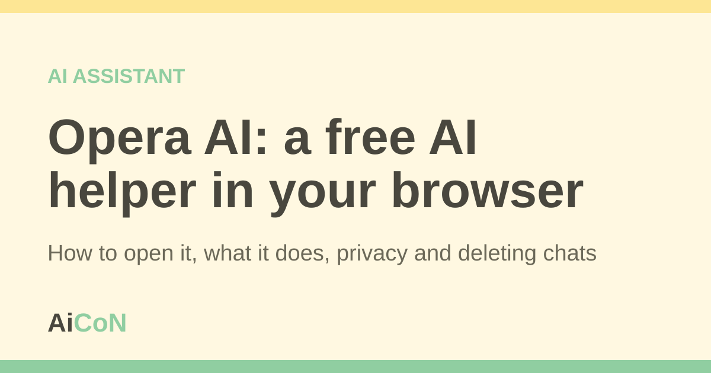

Opera AI: a free AI helper in your browser
Opera AI is a chat helper inside the Opera web browser. Opera says you can use it for free, without signing up. This guide shows how to open it, what it can do, and what to keep out of it.

What is Opera AI?
Opera is a web browser, like Chrome or Firefox. It has an AI chat built in. You type a question and it replies in plain language.
Opera says its AI runs on several large language models (LLMs), for example models from OpenAI or Google. An LLM is a computer program that writes text after learning from a very large amount of writing. Its answers are made by the program, not checked by a person.
What can it do?
Opera's help page lists these jobs:
- Summarise or shorten a web page you are reading.
- Answer questions in everyday language, using information from the web.
- Help write emails or social media posts in a style you choose.
- Help plan a trip, a recipe or a workout.
- Make images from a written description.
- Answer questions about an image or a file you upload (up to three files at a time).
- Read its answer out loud, with the speaker icon.
How to open it, step by step
- Install the Opera browser from opera.com or your phone's app store.
- On a computer, click the AI button at the top right. Or press Ctrl + O on Windows or Linux, or Cmd + O on a Mac.
- On Android or iPhone, tap the AI button in the main menu.
- Type your question and send it.
- To start a fresh chat, tap the + icon at the top of the chat.
You do not need an Opera account. A free account is optional. Opera says it lets you see your chat history and make more images.
Cost and limits
| Free | Opera says Opera AI is free to use in the browser, with no login needed. |
|---|---|
| Image limit | Opera says the daily number of images is "generous", but there may be fair-use limits. A free account gives a higher limit. We could not find a fixed number. |
| Paid option | Opera's help page points to a separate browser called Opera Neon for unlimited image generation on a paid plan. You do not need it to use Opera AI. We did not check its price. |
| Private window | Opera AI does not work in a private window. |
| Chat storage | Signed in: chats are kept for one year, or until you delete them. Not signed in: chats are kept for six hours. |
Use "page content" with care
By default, Opera AI can read the page you have open, so you can ask "summarise this". Opera says it only receives the page content if you write something to the AI while that option is on. You can switch it off at the top of the chat, before you start.
Opera blocks this on some sensitive sites, such as some banks and payment sites. Opera still advises you not to use it on banking, payment, medical or other private pages.
- Do not paste your Aadhaar number, PAN, bank details, OTPs or passwords into any AI chat.
- Do not use page content on your bank or health pages.
- Check any answer about money, health or law on an official site.
How to delete your chats
Opera says deleted chats cannot be restored.
- Computer: open the AI chat, expand it to full tab, open the chat list, then use the bin icon on one chat or "Delete all".
- Android: tap the history icon, then swipe or use the bin icon. To clear all chats and data, use Settings, Privacy and security, Clear data.
- iPhone: sign in first. Tap the list icon, then swipe a chat or use the bin icon.
What changed since the original AiCoN post?
This detailed guide adds setup, fair-use limits, deletion steps and privacy boundaries to the short AiCoN post. Opera AI was previously called Aria. Free access does not mean answers are always correct or that chats stay only on your device.
Age and provider storage
Opera's FAQ says users must be at least 18. It also says OpenAI keeps anonymised parts of chats for 30 days, while Google keeps anonymised parts as needed for the answer, no longer than 24 hours. These provider periods are separate from Opera's own one-year or six-hour chat storage. No-training claims do not mean no retention.
Frequently asked questions
Is Opera AI free?
Opera says yes. You can chat for free in the browser without an account.
Do I need to sign in?
No. A free account is optional. It keeps your chat history longer and raises the image limit.
Does Opera use my chats to train AI?
Opera's FAQ says none of your data, including page content and uploaded files, is used to train AI models.
Can it work in Malayalam or Hindi?
Opera's pages we read do not list supported languages for chat. Opera says selected text can be translated into 50 languages. Try your language and check the answer.
Why is it not working in my private window?
Opera AI is not available in private windows. Open a normal window.
Sources: Opera AI FAQ (Opera Help), Opera AI (opera.com), Free browser AI (opera.com). Checked 7 October 2026.